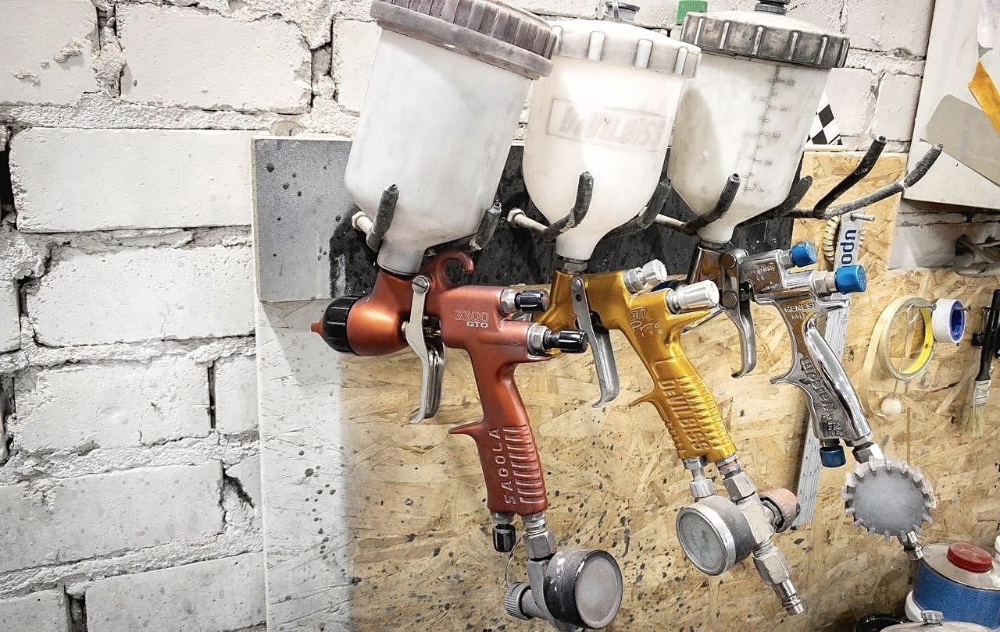
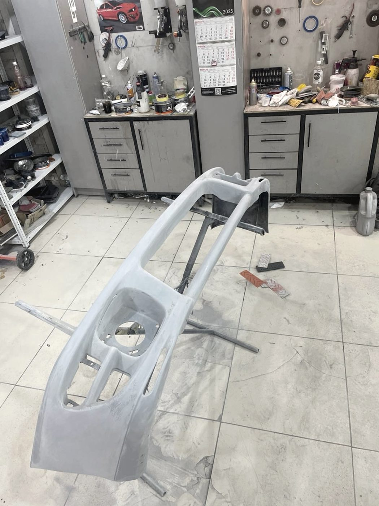
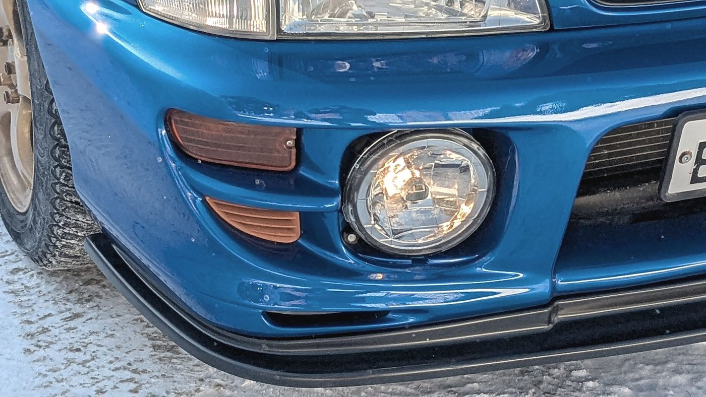
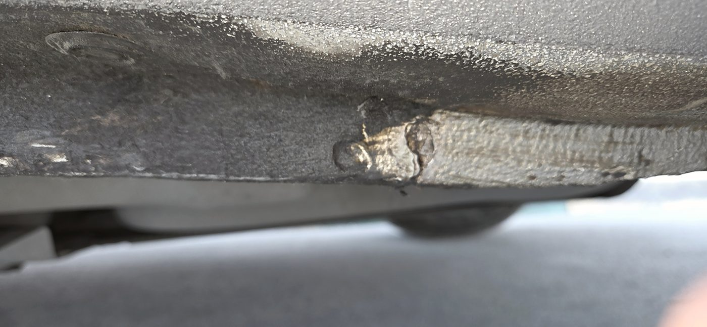
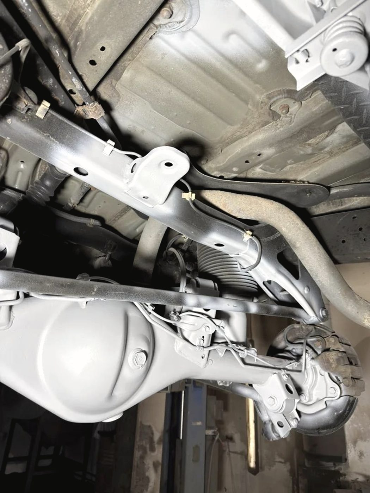
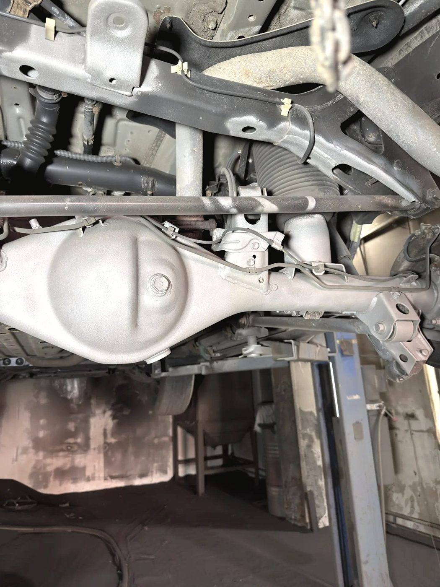
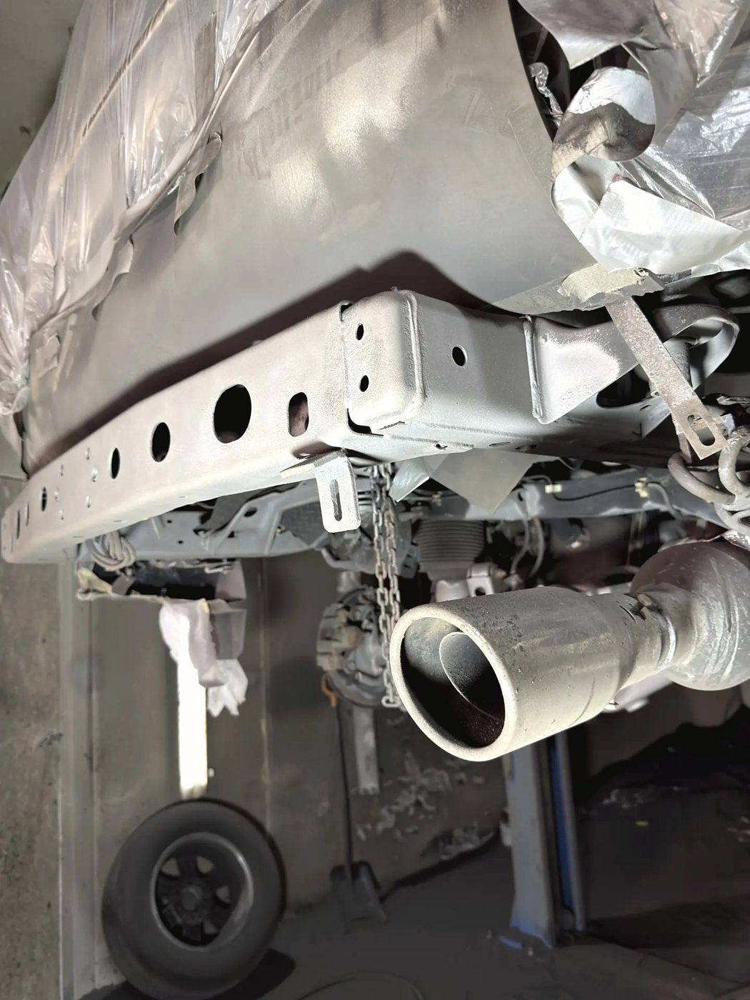

Пескоструй
Снимаем ржавчину и старое покрытие до чистого металла. Только после этого видно настоящий объём работ — и он почти всегда больше, чем кажется снаружи.
Центр кузовного ремонта и покраски · Ионосферная улица, 3/3
Детали мы заказываем и краску подбираем до того, как вы пригнали автомобиль. Пока идёт поставка, вы ездите. Когда всё готово — приезжаете на назначенное время, и машина возвращается к вам в тот же день. Замена и покраска бампера с противотуманкой у нас недавно заняла четыре часа.

Порядок работы
Обычная история в кузовном ремонте: машину забирают, ставят в угол и ждут запчасть неделю. Мы делаем наоборот — и это единственная причина, по которой у нас получаются такие сроки.
Работы
«Подобрать цвет в цвет может не каждый — считай, 90 % работы». Делаем выкрас и проверяем совпадение до того, как красить деталь.
Правка кузова после ударов. Сначала геометрия, потом железо, потом краска — в другом порядке смысла нет.
Выправляем то, что можно выправить, вместо замены детали. Особенно когда деталь редкая или дорогая.
Пороги, арки, силовые элементы. Шов обрабатывается и защищается, а не просто закрашивается.
Восстановительная полировка кузова: матовость, риски, следы от щёток автомоек.
Уход за кузовом и салоном после ремонта — чтобы машина уезжала не только починенной, но и в порядке.


Пескоструй и антикор
Это отдельное направление, и оно у нас поставлено серьёзно: пескоструйная обработка, высокопрочный эпоксидный грунт, антикоррозийные составы на арки, днище и скрытые полости. Перед началом работ мастер объясняет технологию целиком, а по ходу присылает фото и видео — включая те места, которые вы никогда не увидите сами.


Снимаем ржавчину и старое покрытие до чистого металла. Только после этого видно настоящий объём работ — и он почти всегда больше, чем кажется снаружи.
Высокопрочный эпоксидный грунт, затем антикоррозийные составы по технологии, включая скрытые полости. Задний мост, рама, арки, днище — по отдельности, а не «побрызгали снизу».
Отзывы · 5,0 из 5 по 173 оценкам в 2ГИС
«Машина на ремонте находилась всего 4 часа, чему я несказанно рада»
Лариса · замена и покраска заднего бампера · отзыв в 2ГИС, 4 июля 2026
Обработали арки и днище, а также скрытые полости антикоррозийными составами. Перед выполнением работ и заключением наряда-договора получил от специалиста центра исчерпывающую информацию по технологиям. Во время работ получал видео- и фотоотчёты с подробнейшими комментариями мастера.
Валерий Петрищев · 3 июля 2026
Обращался с просьбой привести в порядок задний мост и заднюю часть рамы от Toyota. Качественно и аккуратно обработали пескоструем, загрунтовали высокопрочным эпоксидным грунтом. Все работы выполнили строго в оговорённые сроки.
Александр Гребнев · 20 августа 2026
Подобрать цвет в цвет может не каждый — считай, 90 % работы сделано, если цвет чёткий и покраска без подтёков. Мастер Евгений и с тем, и с другим справился. Благодарен за работу, чёткие сроки и приемлемую цену.
Ник Бас · 28 августа 2026
Всё, что вылазило по машине сверху, — согласовывали всегда. Ребята вежливые, отзывчивые, работы выполнили максимально качественно за вменяемые деньги.
Олег · 18 июля 2026


Контакты